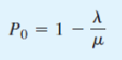
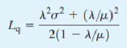
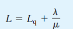
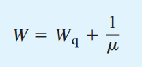
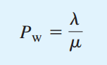
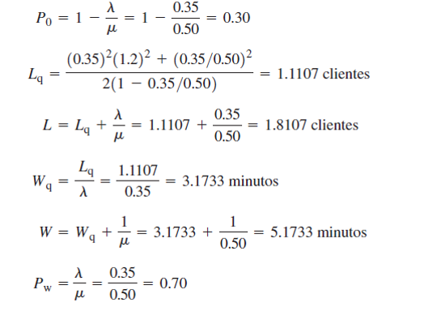
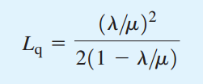

Modelo de líneas de espera de un solo canal con llegadas poisson y tiempos de servicio arbitrarios.
Se considera que la distribución de probabilidad para los tiempos de servició no es necesariamente exponencial.
De acuerdo a la notación de kendall, el modelo de líneas de espera apropiado es un modelo M/G/1, en donde G denota una distribución de probabilidad general, o no especificada y 1 el número de canales.
Características de operación para el modelo M/G/1
Se utiliza la siguiente notación para las características de operación del modelo M/G/1:
- λ = tasa promedio de llegadas
- µ= tasa promedio de servicio
- λ / µ = tiempo promedio de servicio
- ùúé= desviaci√≥n estándar del tiempo de servicio

Con esta notación se presentan en seguida algunas de las características de operación de estado estable para el modelo de líneas de espera M/G/1:
- Probabilidad de que no haya unidades en el sistema:
- Número promedio de unidades en línea de espera:
- Número promedio de unidades en el sistema:
- Tiempo promedio que una unidad pasa en la línea de espera:
- Tiempo promedio que una unidad pasa en el sistema:
- Probabilidad de que una unidad que llega tenga que esperar a ser atendida:






Ejemplo de Aplicación.
La Hartledge’s nut an Candy shop es una de especialidades que se encuentra en un centro comercial. Durante la tarde es atendida por un empleado.
Las llegadas de los clientes son aleatorias, y la tasa promedio de llegadas es de 21 clientes por hora, o λ =21/60 = 0.35 clientes por minuto.
Un estudio del proceso muestra que el tiempo promedio de servicio es de 2 min. Por cliente, con una desviaci√≥n estándar de ùúé = 1.2 minutos.
El tiempo medio de 2 min por cliente muestra que el empleado tiene una tasa promedio de servicio de µ= ½ = 0.50 clientes por minuto.

Modelo de líneas de espera de un solo canal con llegadas según poisson y tiempos de servicio constantes
Se considera que la distribución de probabilidad para los tiempos de servició no es necesariamente exponencial.
De acuerdo a la notación de kendall, el modelo de líneas de espera apropiado es un modelo M/D/1, en donde D denota los tiempos de servicio determinísticos.
- Siendo ùúé = 0, entonces‚Ķ
- 